Spooky Puzzles: Halloween Quest
Kotlin
Custom UI Components
Shared Preferences
Animation Framework
Ігровий процес
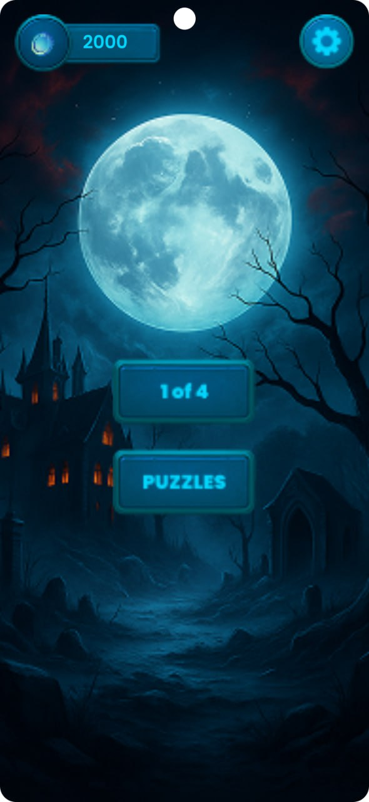
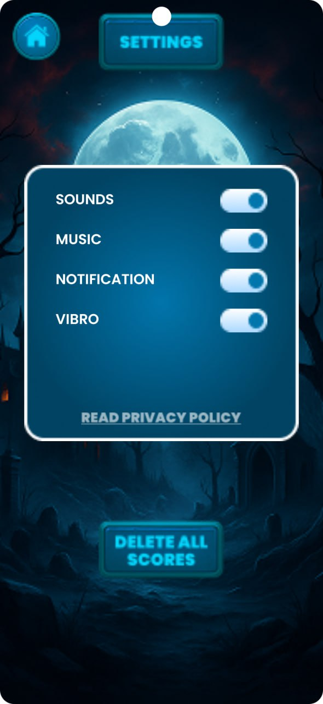
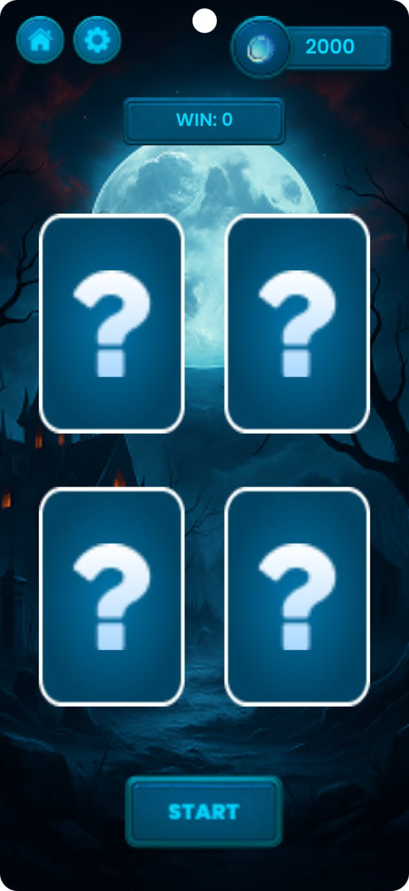
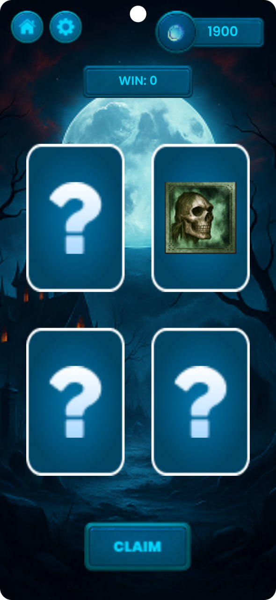
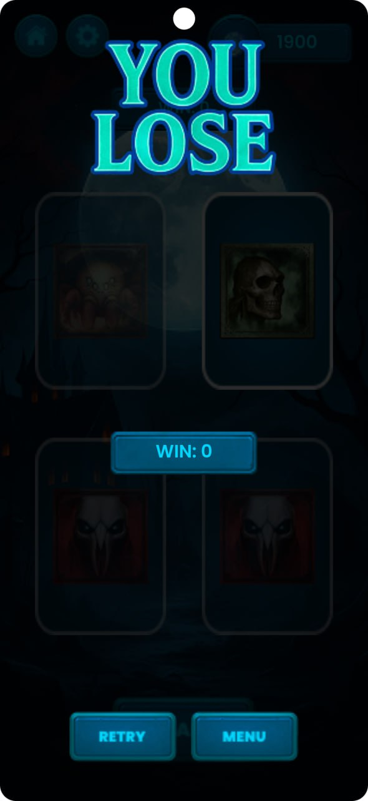
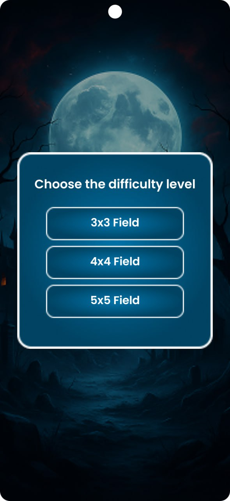
 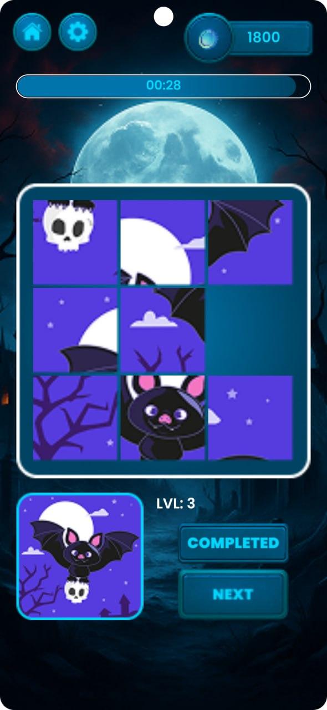
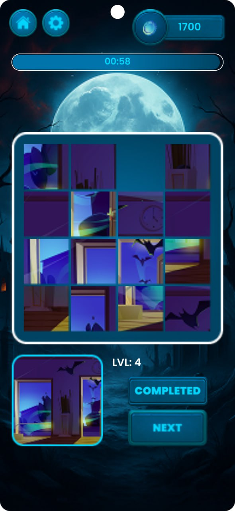
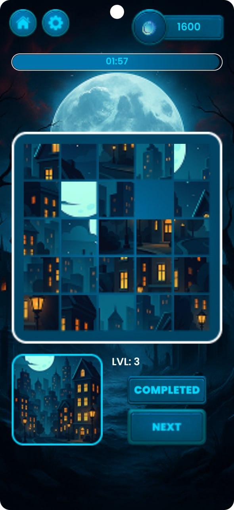
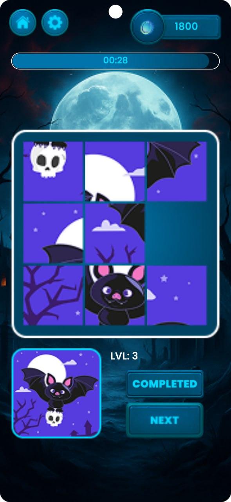
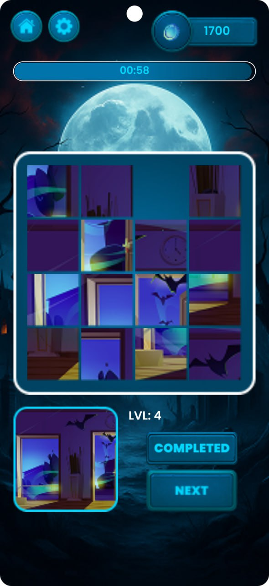
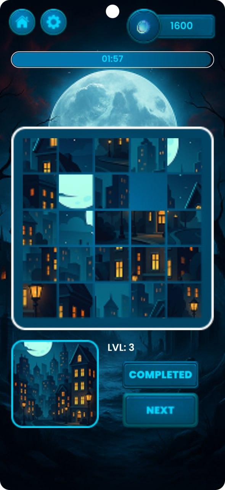
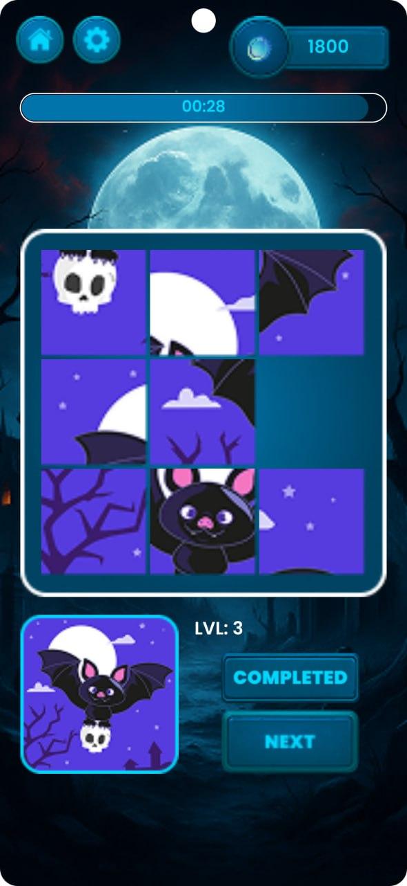
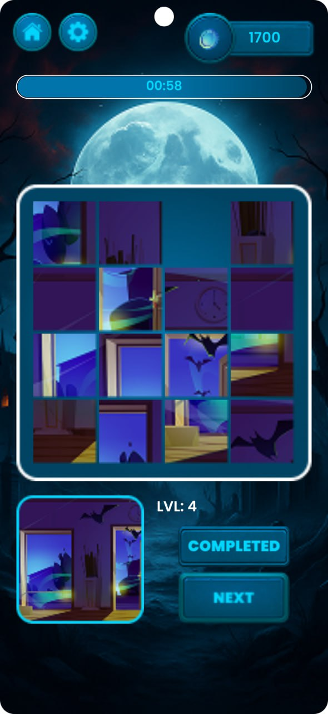
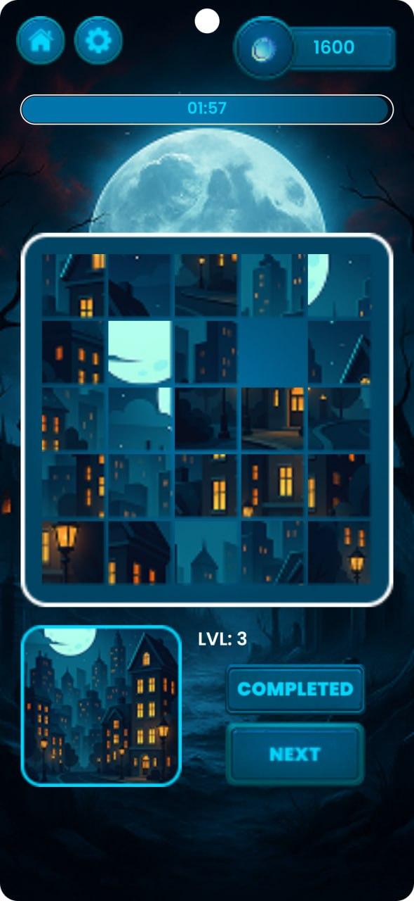
Про проєкт
Spooky Puzzles — це атмосферна казуальна гра, розроблена для фанатів містичних квестів. Проєкт фокусується на створенні плавного ігрового досвіду з інтерактивними елементами та системою винагород.
🧩 Складні пазли
Реалізовано систему розбиття зображень на фрагменти з вибором складності від 3x3 до 5x5 та таймером для змагального ефекту.
🃏 Memory Match
Додатковий ігровий режим на тренування пам'яті з використанням кастомних карток та анімацій перевертання.
💰 Ігрова економіка
Локальна система балансу монет, що дозволяє користувачу відкривати нові рівні та відстежувати свій прогрес.
Технічні особливості
- Custom Views: Створення кастомних контейнерів для сітки пазлів та ігрових карток.
- State Management: Збереження ігрового прогресу, налаштувань звуку та балансу монет.
- UX/UI: Глибока кастомізація Material компонентів під стилістику Halloween з використанням неонового світіння.